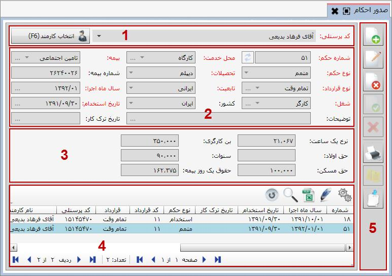
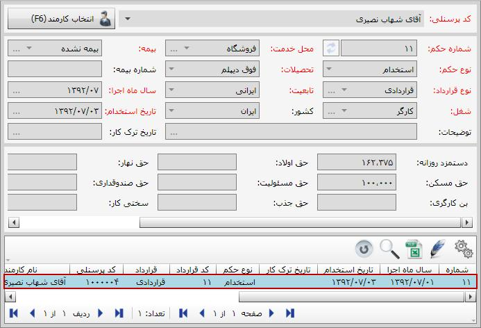

پس از معرفی کارمندان به سیستم حقوق و دستمزد، برای اینکه بتوانید برای هر یک از کارمندان عملیاتی از قبیل پرداخت وام، پرداخت مساعده، محاسبه حقوق و ... انجام دهید، باید برای آن ها در سیستم احکامی صادر نمایید. احکام حقوق و دستمزد شامل استخدام، متمم و پایان کار می باشد به بر حسب نیاز برای هر یک از کارمندان صادر می شود. برای دسترسی به این صفحه، از بخش «عملیات روزانه» روی منوی «صدور احکام» کلیک کنید تا صفحه مربوط به آن باز شود:

در ابتدا صفحه صدور احکام به صورت شکل بالا نمایش داده می شود. در فیلد کد پرسنلی لیست کارمندان معرفی شده به سیستم قرار گرفته است که با انتخاب نام هر یک از کارمندان و انتخاب گزینه می توانید احکام صادر شده برای آن شخص را مشاهده و یا در صورت نیاز برای وی حکم صادر نمایید. در شکل زیر نام یکی از کارمندان انتخاب شده و در جدول پایین صفحه احکام مربوط به آن شخص نمایش داده شده است:
صفحه صدور احکام با پنج قسمت مشخص شده است که هر قسمت را به صورت جداگانه شرح می دهیم:
1 : در این قسمت می توانید نام کارمند مورد نظرتان را وارد نمایید، چنانچه این فیلد غیر فعال بود با زدن گزینه «انتخاب کارمند» این فیلد فعال می گردد.
2 : در این قسمت مشخصات حکم انتخاب شده از جدول قسمت 4 برای شخص مورد نظر را نمایش می دهد.
3 : عوامل قرارداد مربوط به حکم انتخاب شده در این قسمت نمایش داده می شود. این عوامل و مقادیر آن ها بسته به نوع قرارداد انتخاب شده برای هر حکم ممکن است متفاوت باشد.
4 : همان طور که گفته شد در جدول شماره 4 لیست احکام صادر شده برای کارمند انتخاب شده نمایش داده می شود.
 در هنگام انتخاب نام کارمند، گزینه ای با نام نمایش همه احکام وجود دارد که در صورت انتخاب آن، در جدول شماره 4 لیست همه احکام صادر شده برای همه کارمندان به نمایش درمی آید.
در هنگام انتخاب نام کارمند، گزینه ای با نام نمایش همه احکام وجود دارد که در صورت انتخاب آن، در جدول شماره 4 لیست همه احکام صادر شده برای همه کارمندان به نمایش درمی آید.
5 : این قسمت نیز شامل ابزاری است که برای انجام عملیاتی همچون ایجاد، ویرایش، حذف و ... در مورد احکام به کار می رود.
برای صدور حکم جدید برای یک کارمند، ابتدا نام آن شخص را از قسمت 1 انتخاب و تایید نمایید تا گزینه
 فعال گردد. آنگاه روی آن کلیک کنید تا فرم صدور حکم جدید باز شود:
فعال گردد. آنگاه روی آن کلیک کنید تا فرم صدور حکم جدید باز شود:
اگر قبلا برای کارمند انتخاب شده حکم صادر کرده باشید، در فرم صدور حکم، در قسمت مشخص شده در شکل بالا مشخصات آخرین حکم صادر شده برای کارمند انتخاب شده نمایش داده می شود و تنها فیلد نوع حکم خالی می باشد. در کادر وسط عوامل نوع قرارداد انتخابی و در جدول پایین حکم های صادر شده برای آن شخص نمایش داده خواهد شد. اگر هم قبلا برای کارمند مورد نظر حکمی صادر نشده باشد فرم صدور حکم جدید به شکل بالا نمایش داده می شود.
شماره حکم به صورت خودکار و به ترتیب همه احکام صادر شده در سیستم درج می شود، می توانید شماره آن را تغییر دهید اما شماره حکم نباید تکراری باشد. در فیلد محل خدمت، لیست محل های خدمت که در بخش های قبل توضیح داده شد نمایش داده می شود، بسته به محل خدمت کارمند یکی از موارد را انتخاب کنید. در فیلد بیمه هم گزینه های بیمه نشده و نوع بیمه تعریف شده در سیستم قرار دارند.

در این فیلد سه انتخاب وجود دارد. گزینه استخدام برای زمانی است که کارمند تازه استخدام شده و تاکنون برای وی حکمی صادر نشده است. اگر لازم باشد تغییراتی در حکم استخدام صورت گیرد، لازم است که برای شخص مورد نظر حکم متمم صادر کنید و تغییرات لازم را در حکم متمم اعمال نمایید. برای ثبت پایان کار یک کارمند نیز نوع حکم را پایان کار انتخاب نمایید.
در صورتی که قرار باشد نوع قرارداد کارمندی تغییر کند، برای مثال قرارداد وی از نیمه وقت به تمام وقت تغییر یابد، نمی توانید برای وی حکم متمم روی حکم استخدام قبلی داشته باشید. لازم است که ابتدا حکم پایان کار قرارداد قبلی را صادر کرده و دوباره بر اساس قرارداد جدید، برای کارمند مورد نظرتان حکم استخدام صادر نمایید.
برای فیلد تحصیلات از لیست موجود یکی از گزینه ها را انتخاب نمایید. اگر برای فیلد بیمه، نوع بیمه را تعیین کرده باشید می توانید در فیلد شماره بیمه، شماره بیمه شخص را وارد نمایید.

در فیلد نوع قرارداد لیست قراردادهایی که در قسمت تعریف انواع قرارداد ایجاد کرده اید نمایش داده می شود.
در قسمت تعریف قراردادها و عوامل آن ها گفتیم که عوامل تعریف شده برای قرارداد سه نوع است، عوامل حکمی، کارکردی و محاسباتی. در فرم صدور حکم، پس از انتخاب نوع قرارداد، آن دسته از عوامل قرارداد انتخاب شده که عملکرد آن ها حکمی انتخاب شده بود در کادر وسط فرم صدور حکم ظاهر می شود و می توانید مقادیر آن ها را برای آن حکم تعیین نمایید.
با انتخاب نوع قرارداد، در کادر وسط فرم صدور حکم، عوامل حکمی قرارداد انتخاب شده قرار می گیرند و می توانید برای آن حکم مقادیر آن عوامل را تعیین کنید.
سایر فیلدها را نیز به تناسب حکم در حال ایجاد کامل کنید و در انتها توسط گزینه آن را ثبت نمایید. حکم ثبت شده به شکل زیر نمایش داده می شود:
با استفاده از ابزار موجود در سمت راست فرم صدور حکم، می توانید عملیات ویرایش، حذف، چاپ و ... که قبلا نیز توضیح داده شده را انجام دهید. با استفاده از گزینه نیز می توانید تاریخچه عملیاتی که تا کنون برای حکم صادر شده انجام شده است را مشاهده نمایید.